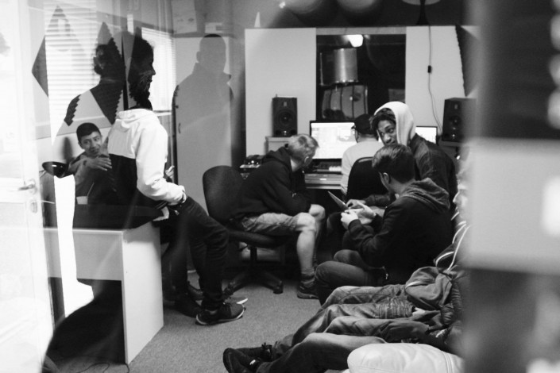

Urban Music

Urban Music er professionel musikundervisning i
Hip Hop genren, som Erkan Cakmak fra Ishøj Ungdomsskole underviser i.
Det sker i Lydstudiet hver torsdag fra kl.15:00-19:00.
Her har unge mulighed for at blive en del af et ambitiøst musikunivers.
Også får de et OCN læringsbevis på at de har gennemført et forløb i RAP.
Deres Open College Network bevis kan bruges ved fx. jobsøgning og
ansøgning til en videregående uddannelse.
Urban Dance

Det er professionel undervisning i forskellige urban
danse-stilarter hver torsdag i den røde varmecentral. Der undervises i
bl.a. Hip Hop'ens forskellige genre og introduktion til Hip Hop-kulturens baggrund.
Hver torsdag kl.16:00-17:00 for 8-11 årige og kl.17:00-18:00 for 12-18 årige.
Urban Dance skaber rammer for at unge i Vejleåparken kan
blive en del af et kreativt fællesskab med store udviklingsmuligheder
og flere gange årligt optræder danseholdet ved diverse kulturelle events.
Brandkadet

Brandkadet giver to gange årligt 8 unge beboere i
Vejleåparken mulighed for at deltage i et 5 dages forløb på en brandstation.
Hvor de lærer nyttige redskaber som teambuilding, førstehjælp, idrætstest.
Så får de mulighed for at prøve kræfter med brandslukning, røgdykning og
rapelling. Forløbet afsluttes med en opvisning og overrækkelse af diplomer.
De to ét-ugers forløb følges op af et 12 ugers
forløb for de deltagere, som er motiverede og egnede til at fortsætte.
Det er i samarbejde med Østsjællands Beredskab og Ishøj Kommunes Stabsenhed
for Tryghed og Kriminalitetsforebyggelse.
På 12 ugers-forløbet, vil en tidligere ildflue eller
brandkadet, deltage som hjælpeinstruktør.
Det har vi gode erfaringer med, fra et pilotprojekt foretaget i den
nuværende helhedsplan i Vejleåparken.